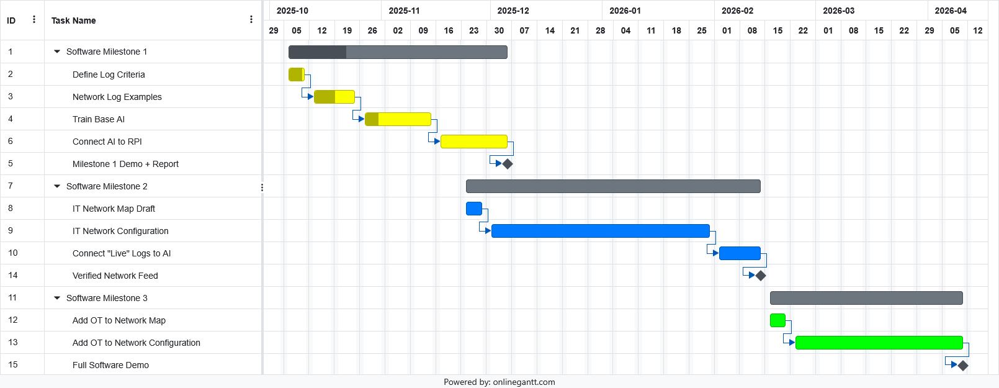
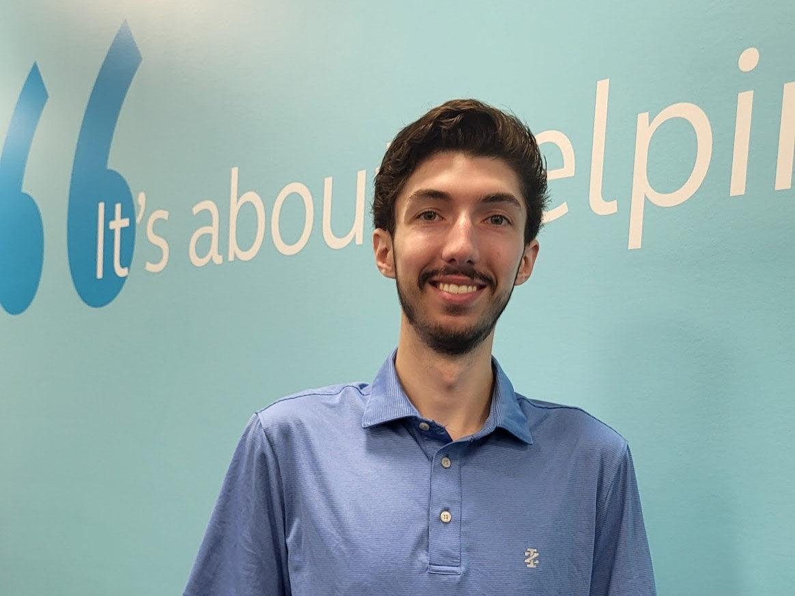
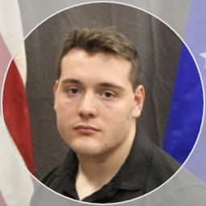

Senior Design Team sample • Sample SD Site
Project Overview: GridSAFE: Cyber Simulation of Grid Attacks with AI Anomaly Detection
GridSAFE is a cyber-physical platform that simulates attacks on the U.S. electrical grid and demonstrates how an AI-based anomaly detection system can identify malicious activity. The system integrates log generation, AI detection, and a physical city model to visualize the effects of cyberattacks in a safe, educational environment. The team is responsible for designing and implementing the hardware, software, and architectural components, including microcontroller integration, LED-based grid visualization, and AI anomaly detection workflows. This project provides hands-on experience in cyber-physical system design, hardware-software integration, and cybersecurity for critical infrastructure, using resources such as ECpE computing labs, fabrication equipment, microcontrollers, and virtual machines for simulation and model training.
Team Members
Nellie Leaverton
Hardware & ArchitecturalDesign Lead
Senior in Electrical Engineering at Iowa State University with a minor in Cybersecurity. Passionate about technology, network security, and building efficient, secure systems. Works in the ISEAGE lab designing cyber defense competitions. Enjoys climbing, camping, and leading outdoor adventures.
Jason Di Giovanni
Software & SecurityLead 
Senior in Cybersecurity Engineering at Iowa State University. Passionate about critical infrastructure protection, SOC operations, and AI assisted network defense. Experienced in firewall deployment, threat analysis, and security automation. Enjoys fitness, photography, and music.
Evan Booze
Hardware & ArchitecturalDesign Assistant
Senior in Electrical Engineering at Iowa State University with a minor in Liberal Arts. Passionate about power and energy systems, protections, and controls. Experienced with circuit simulation and electromagnetic transient modeling. Enjoys hiking, video games, and movies.
Brant Gicante
Software & SecurityAssistant
Senior in Cybersecurity Engineering at Iowa State Unviersity. Passionate about network configurations, pentesting systems, and analysis of infrastructure. Experienced with threat analysis and network building, aswell as modeling software due to robotics competitions. Enjoys videogaming, rockclimbing, playing music, and archery
Anthony Nehring
Software & SecurityAssistant 
Senior in Cybersecurity Engineering at Iowa State Unviersity. Passionate about cyber in a national defense context. Experinced in cyber threat intelligence, netowk and host operator positions, and red team operations. Enjoys fitness, camping/hiking, and music
Kyle Maloney
Testing Lead & DesignAssistant
Senior in Software Engineering with a minor in Cybersecurity at Iowa State University. Passionate about application security and security automation. Security automation and threat analysis. Enjoys playing volleyball, volunteering with animals, and experimenting with his homelab.
Weekly Reports
Report 1Report 2
Report 3
Report 4
Report 5
Report 6
Report 7
Report 8
Report 9